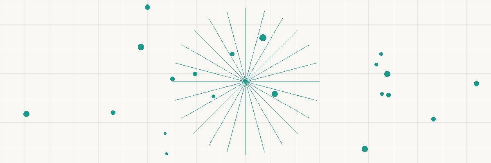

HIGH-DEDUCTIBLE HEALTH SAVINGS TRIPLE TAX
HEALTH PLAN ACCOUNT ADVANTAGE
───────────────── ═══════════════════ ─────────────────
• HDHP required: ──╲ ╱── TAX BREAK #1:
$1,600+ deductible ───╲┌──────────┐╱─── • Contributions are
(individual) ────╳│ HSA │╳──── tax-deductible
• Lower premiums ───╱└──────────┘╲─── TAX BREAK #2:
• Catastrophic ╱ ╲ • Growth is tax-free
coverage model TAX BREAK #3:
• Withdrawals for
2024 LIMITS: INVESTMENT: medical = tax-free
───────────────── ═══════════════════
• Individual: $4,150 • Invest in index NO OTHER ACCOUNT
• Family: $8,300 funds HAS ALL THREE.
• 55+ catch-up: • Grows like IRA Not 401(k). Not Roth.
+ $1,000 • No RMDs ever Only the HSA.
────────────────────────────────────────────────
THE MATH (family, 25 years, never withdraw):
$8,300/year × 25 years × 8% growth = $632,000
Tax saved on contributions (32% rate): $66,400
Tax on growth & withdrawals for medical: $0
Total tax benefit: $250,000+
FADE IN: A corporate meeting room during open enrollment. NANCY PARK (40s, HR benefits coordinator, secretly a tax optimization nerd) is doing a small-group session. Three employees sit across from her: ALEX (30, single, healthy), JESSICA (38, married, two kids), and TOM (55, nearing retirement). NANCY Okay, you three opted into this session because you checked "I want to understand HSAs" on the enrollment form. So let me start with a question: what's the best retirement account in the tax code? ALEX 401(k)? TOM Roth IRA? NANCY Wrong and wrong. It's the Health Savings Account. And I'm going to spend the next twenty minutes showing you why it's the single most tax-advantaged account Congress has ever created.
NANCY Every tax-advantaged account gets ONE or TWO tax benefits. The HSA gets THREE. No other account in the entire tax code does this. She writes on the whiteboard: NANCY (CONT'D) Traditional 401(k): Tax-deductible contributions. Taxable withdrawals. TWO tax features (deduction + tax-deferred growth). Roth IRA: Non-deductible contributions. Tax-free growth. Tax-free withdrawals. TWO tax features (tax-free growth + tax-free withdrawals). HSA: Tax-deductible contributions. Tax-free growth. Tax-free withdrawals for medical expenses. THREE tax features. All three. She circles "HSA" three times. NANCY (CONT'D) Contributions reduce your taxable income — like a 401(k). Growth is never taxed — like a Roth. And withdrawals for qualified medical expenses are completely tax-free. It's the only account where money goes in tax-free, grows tax-free, and comes out tax-free. JESSICA That sounds too good. NANCY It's Section 223 of the Internal Revenue Code. Congress created it in 2003 specifically to incentivize high-deductible health plans. The triple benefit is the carrot.
NANCY To be eligible, you need a High-Deductible Health Plan — HDHP. For 2024, that means a deductible of at least $1,600 for individual coverage or $3,200 for family. ALEX Our HDHP option has a $3,000 deductible for individual. That qualifies? NANCY Yes. And the contribution limits for 2024 are $4,150 for individual coverage and $8,300 for family coverage. If you're 55 or older — that's you, Tom — you get an extra $1,000 catch-up contribution. TOM So I could put in $9,300 this year? NANCY If you have family coverage, yes. And here's a bonus: if your employer contributes to your HSA, that counts toward the limit — but it ALSO avoids FICA taxes. Our company contributes $1,000 for individual and $2,000 for family coverage. That money isn't subject to Social Security or Medicare tax on either side. JESSICA So it's even better than a 401(k) contribution from a tax perspective? NANCY Yes! A 401(k) contribution avoids income tax but still incurs FICA (Social Security and Medicare). An HSA contribution through payroll deduction avoids BOTH income tax AND FICA tax. At a combined FICA rate of 7.65%, that's an additional savings of $635 for a family contributing $8,300 through payroll.
NANCY Now here's the strategy nobody tells you. You don't have to spend your HSA money on medical expenses this year. Or next year. Or ever — until you choose to. ALEX What do you mean? I thought it was for medical bills. NANCY It IS for medical bills. But there's no deadline on when you reimburse yourself. You can pay a medical bill out of pocket today, save the receipt, and reimburse yourself from the HSA thirty YEARS from now. Tax-free. She lets that sink in. NANCY (CONT'D) The strategy: pay all medical expenses out of pocket. Let your HSA grow and compound, invested in index funds, for decades. Keep every receipt. In retirement, when you need the money, withdraw and reimburse yourself for all those accumulated medical expenses. Completely tax-free. TOM So it's basically a Roth IRA with even better tax treatment? NANCY Better. Because the contribution was tax-deductible too. A Roth gives you two of three. The HSA gives you all three — IF you use it for medical expenses. And after 65, you can use it for ANYTHING (non-medical withdrawals after 65 are just taxed as ordinary income, like a Traditional IRA — no penalty). JESSICA So worst case after 65, it's equivalent to a Traditional IRA. Best case, it's better than a Roth. NANCY Exactly right. There is no scenario where funding an HSA is the wrong move if you're eligible.
NANCY Most people make the mistake of leaving their HSA in cash — a savings account earning 0.5%. Don't do that. The HSA can be invested in mutual funds, index funds, and ETFs just like a 401(k) or IRA. She shows the math: NANCY (CONT'D) Family contributing $8,300 per year, invested at 8% annual return, for 25 years: approximately $632,000. If left in a cash savings account at 1%: approximately $237,000. The difference — $395,000 — is purely from investing rather than saving. ALEX I'm 30. If I max it for 35 years... NANCY $4,150 per year at 8% for 35 years: approximately $730,000. All of it tax-free when used for medical expenses. And Alex — you WILL have medical expenses in retirement. The average retired couple spends $315,000+ on healthcare costs. Your HSA could cover all of it, tax-free. TOM I'm 55. I've only got 10 years until Medicare. NANCY $9,300 per year for 10 years at 8%: approximately $145,000. Plus whatever's already in there. And don't forget — Medicare premiums, dental, vision, long-term care insurance, and most medical expenses in retirement are ALL qualified HSA expenses. You'll have no trouble spending it tax-free. JESSICA What about my kids' medical expenses? NANCY Qualified medical expenses for your spouse and dependents count too. Braces, glasses, therapy, prescriptions — all tax-free from the HSA. But remember the strategy: pay out of pocket if you can afford to, keep receipts, let the HSA grow, reimburse later.
ALEX How do I keep track of receipts for thirty years? NANCY Digital folders. Create a folder called "HSA Receipts" in your cloud storage. Every time you pay a medical expense out of pocket, snap a photo of the receipt or save the EOB (Explanation of Benefits) from your insurer. Include the date, amount, and type of expense. She shows her phone. NANCY (CONT'D) I've been doing this for twelve years. My folder has $47,000 in accumulated medical expenses I've never reimbursed from my HSA. That's $47,000 I can withdraw tax-free ANY time I want — today, next year, or in twenty years. The HSA balance keeps growing in the meantime. JESSICA Is there an audit risk? NANCY Keep records for seven years past the withdrawal date — that's the statute of limitations. If the IRS ever asks, you show the receipt dated 2024 and the withdrawal dated 2045. The law doesn't restrict the time gap. It just requires the expense to have occurred while you were HSA-eligible. TOM What if I lose the receipts? NANCY For insurance companies and medical providers, you can typically request EOB copies going back years. For pharmacy and doctor visit copays, most health plan portals have claims history going back 5-10 years. Download those annually as backup. NANCY (CONT'D) The key insight: your HSA balance and your receipt folder are two separate assets. The balance is your investment. The receipts are your tax-free withdrawal tickets. Both grow over time.
JESSICA What's the difference between this and the FSA I've been using? NANCY Night and day. An FSA — Flexible Spending Account — has a "use it or lose it" provision. You must spend the money by year-end (or a small grace period). Whatever you don't spend, you forfeit to your employer. It's a terrible design. She compares: NANCY (CONT'D) FSA: Use it or lose it. Limited to $3,200 (2024). Can't invest. Can't carry forward. Employer owns the unspent balance. HSA: Rolls over forever. No expiration. Fully investable. You own it permanently — even if you change jobs. Portable, heritable, and permanent. JESSICA I've been using the FSA... NANCY Switch. During this open enrollment, drop the FSA and elect the HDHP with HSA. The HDHP premiums are typically $100-200/month less than the PPO — that savings alone covers most of your routine medical costs, and you're building a tax-free wealth account simultaneously. ALEX What if you have both? Can you have an HSA and FSA? NANCY Not a general-purpose FSA. But you CAN pair an HSA with a "Limited Purpose FSA" that covers only dental and vision. That lets you use pre-tax FSA dollars for teeth and eyes while keeping the HSA invested for everything else. Best of both worlds.
NANCY Let me paint the retirement picture. Jessica — you're 38, contributing $8,300/year to family HSA, for 27 years until you're 65. She calculates: NANCY (CONT'D) $8,300/year × 27 years at 8% = approximately $680,000 in the HSA. Now. Your medical expenses in retirement: Medicare Part B premiums ($175/month in today's dollars, rising with inflation), supplemental insurance, dental, vision, prescriptions, long-term care... Conservative estimate: $400,000 in medical expenses over a 25-year retirement. You withdraw $400,000 from the HSA to cover medical expenses: tax-free. The remaining $280,000? After age 65, you can withdraw for any purpose — it's just taxed as ordinary income, like an IRA. Or you let it keep growing and pass it to your spouse tax-free. JESSICA So it covers all my retirement healthcare AND leaves money over? NANCY If you start now, invest aggressively, and don't tap it early — yes. The HSA becomes your dedicated healthcare retirement fund. Most people fund their 401(k) and Roth but forget that healthcare is their single largest retirement expense. The HSA is purpose-built for it. TOM What happens to the HSA when I die? NANCY If you name your spouse as beneficiary: they inherit it as their own HSA. Full tax benefits continue. If a non-spouse inherits: it's distributed as taxable income. So for estate planning, name your spouse first, and consider spending it down on qualified medical expenses late in life.
NANCY One more advantage that's easy to miss. When you contribute to the HSA through payroll deduction — which our company offers — the contribution avoids FICA taxes entirely. Both the employee portion AND the employer portion. She breaks it down: NANCY (CONT'D) A 401(k) contribution of $8,300 saves you income tax but NOT FICA. You still pay 7.65% on that $8,300 in Social Security and Medicare taxes. Cost: $635. An HSA contribution of $8,300 through payroll saves you income tax AND FICA. Additional savings: $635 per year to you, plus $635 to your employer. ALEX That's an extra $635 per year just from HOW I contribute? NANCY Over 35 years at 8% growth, that $635/year difference compounds to approximately $113,000. Just from the FICA savings being reinvested. If you have the option to contribute through payroll rather than writing a personal check — always choose payroll. TOM What if I contribute outside of payroll? NANCY You can still deduct it on your tax return — Line 17 of Schedule 1. You get the income tax deduction either way. But you miss the FICA exclusion. For most employees, payroll deduction is strictly superior. JESSICA I'm switching to payroll contribution right now. NANCY (smiling) I'll have the form for you before you leave this room.
Nancy caps her whiteboard marker and faces the three employees. NANCY Here's the priority order for your benefits enrollment: She writes: NANCY (CONT'D) 1. Contribute enough to your 401(k) to get the full employer match. (Free money.) 2. Max your HSA. ($4,150 individual / $8,300 family through payroll.) 3. Max your 401(k) to the $23,000 limit. 4. Backdoor Roth IRA. 5. Mega Backdoor Roth if available. The HSA comes BEFORE maxing the 401(k). Why? Because it has three tax benefits instead of two, it avoids FICA, and it's perfectly suited for your largest retirement expense — healthcare. TOM I feel stupid for leaving mine in cash for ten years. NANCY You're not stupid — you were uninformed. The HSA is marketed as a "health spending account" when it's actually one of the most powerful investment vehicles in the tax code. It's a branding failure, not an intelligence failure. She hands each of them a one-page summary. NANCY (CONT'D) IRC Section 223 — Health Savings Accounts. Triple tax-free. No RMDs. Portable. Heritable. And available to anyone with a high-deductible plan. The only catch is you have to actually invest it rather than leave it in cash. Go set up your investment elections today. All three nod and stand, forms in hand, already mentally calculating decades of tax-free compounding. FADE OUT. — END —